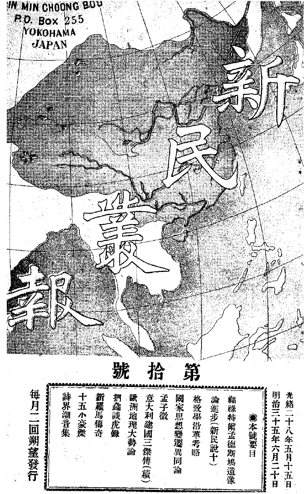
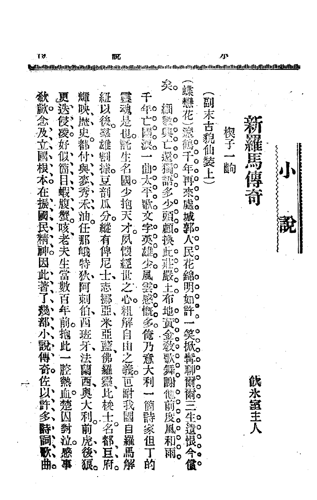
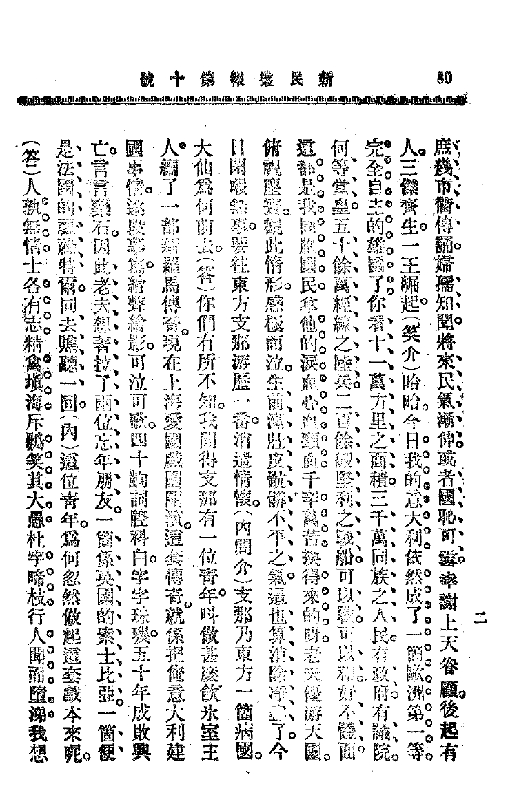
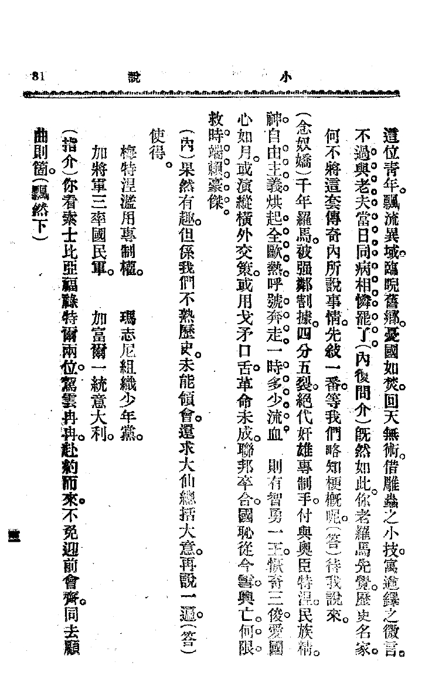
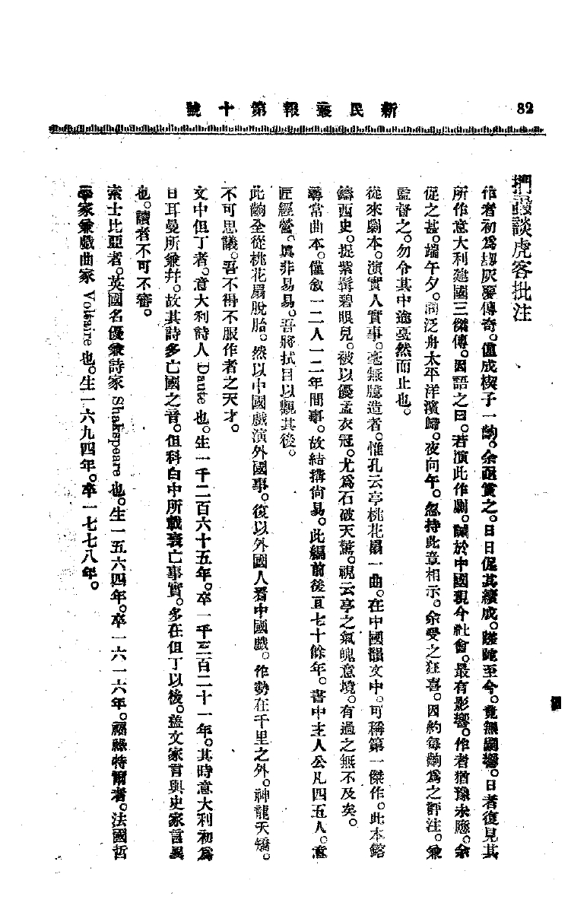

Liang Qichao New Legends of Rome
Liang Qichao. “The New Legend of Rome”. In New Citizen. no. 10. Japan, Yokohama: Guangzhi Press. 1902.
梁启超.
新罗马传奇. 新民丛报. 第10号. 日本横滨: 广智书局. 1902.
千年亡国泪，一曲太平歌。
Lots are the grief tears for fallen nation in thousands of years,
only one single song of peace echoes through the ages.
文字英雄少，风云感慨多。
Few are the heroes of literature,
many are the laments for vicissitude.
This is the soul of an Italian poet, Dante.
Born in this world-renowned land,
endowed with great talent from a young age,
I have a keen interest in worldly matters,
and a rough understanding of the meaning of freedom.
叵耐我国自罗马解纽以后，群雄割据，豆剖瓜分。
纵有俾尼士、志挪亚、米亚蓝、佛罗灵、比梭士，名都巨府，辉映历史，都付与麦秀禾油。
Ever since the unraveling of Rome’s grandeur,
different powers rise, dividing my homeland asunder.
Venice, Genoa, Milan, Florence, and Pisa,
cities once renowned and prosperous, shining through history,
have all been buried under grain and millet.
(“麦秀禾油” generally refers to cereal crops such as millet, barley, rice, and wheat. The phrase is often used to express
compassion or sorrow for the desolation and ruin of one's homeland or the dilapidation of once prosperous places.)
任那峨特狄、阿剌伯、西班牙、法兰西、奥大利，前虎后狼，更迭侵凌，好似个目虾腹蟹。
Russia, Arab, Spain, France, and Austria,
like predatory wolves and ferocious tigers,
invaded and ravaged Italy.
Italy, you are nothing more than
a blind jellyfish that only knows following a shrimp,
or a hermit crab hiding in the shell.
(“目虾腹蟹”，a hermit crab hiding in the shell. This expression is used to describe the lack of independence or initiative.)
老夫生当数百年前，抱此一腔热血，楚囚对泣，感事唏嘘。
念及立国根本，再振国民精神，
因此著了几部小说传奇，佐以许多诗词歌曲，
庶几市衢传诵，妇孺知闻。
将来民气渐伸，或者国耻可雪，幸谢上天眷顾，后起有人。三杰齐生，一王崛起。
I was born in days of yore, centuries past,
I came into this world with passionate love.
Being exiled, I wept in despair.
Contemplating the base of the nation,
I aim to rejuvenate the spirit of the people.
Thus, I penned several novels,
accompanied by numerous poems and songs.
In the marketplaces and on the streets,
people will sing and spread my poetic feats.
It is destined to be known by women, children, everyone.
As the years unfold, the Italian people rise, the shameful past will be erased.
I will be grateful for the Providence,
as three heroes emerge, and one king rises.
（笑介）哈哈，今日我的意大利依然成了一个欧洲第一等完全自主的雄国了。你看十一万方里之面积，三千万同族之人民，有政府，有议院，何等堂皇。五十余万精练之陆兵，二百余艘坚利之战船，可以战，可以守，好不体面。这都是我同胞国民拿他的泪血心血头血，千辛万苦，换得来的呀。老夫优游天国，俯视尘寰，观此情形，感激而泣。生前满肚皮肮脏不平之气，这也算清楚净尽了。今日闲暇无事，要往东方支那游历一番，消遣情怀。
(Laughing) Haha, today my Italy becomes a first-rate, completely independent and powerful nation in Europe. Look at the
vast territory of 110,000 square miles, a population of 30 million compatriots, with a government and a parliament. How
magnificent! With over 500,000 well-trained infantry and more than 200 swift warships, capable of both offense and
defense. How impressive! All of this is the result of the blood, sweat, and tears of my fellow countrymen, endured
through hardships and sacrifices. In my afterlife, as I leisurely traverse the Paradise, overlooking the earthly realm,
witnessing such a state of affairs, I am filled with gratitude and moved to tears. The grievances and injustices that
tortured me in my lifetime have been thoroughly cleansed. Now, with leisure time on my hands, I intend to travel to the
Far East, particularly to China, to explore and relax.
（内问介）支那乃东方一个病国，大仙为何前去。
China is the Sick man of the East. Why would you, a great sage, want to go there?
（答）你们有所不知，我闻得支那有一位青年叫做什么饮冰室主人，编了一部新罗马传奇。现在上海爱国戏团开演这套传奇。就是把俺意大利建国事情，逐段摹写，绘声绘影，可泣可歌。四十出词腔科白，字字珠玑，五十年成败兴亡，言言乐石。因此老夫想着拉了两位忘年朋友。一个是英国的莎士比亚，一个便是法国的福禄特尔，同去瞧听一回。
You don’t understand. I heard that in China, there’s a young man named Yinbingshi Zhuren (Host of the Ice-drinker's
studio) , who has compiled The New Legend of Rome. Currently, the Patriotic Drama Troupe in Shanghai is staging this
legend. It vividly depicts the founding of my Italy, portraying every detail with such emotion that it can bring tears.
With fourth acts of poetic dialogue and eloquent lines, this drama narrates fifty years of rise and fall, each word a
polished gem. Therefore, I thought of inviting two ageless friends: one is William Shakespeare from England, and the
other is Victor Hugo from France, to join me in witnessing this performance.
（内）这位青年为何忽然做起这套戏本来呢
（答）人孰无情，士各有志。精禽填海，斥鷃笑其大愚；杜宇啼枝，行人闻而堕泪。我想这位青年漂流异域，临睨旧乡，忧国如焚，回天无术。借雕虫之小技，寓遒铎之寓言。不过与老夫当日同病相怜罢了。
(Answer) No one is devoid of feeling; each person has their own aspirations. Swift birds fill the sea, while the osprey
scorns their folly ; the cuckoo weeps on the branches, and passersby shed tears upon hearing . I think this young man,
drifting in a foreign land, gazing upon his hometown, is deeply distressed for his motherland and feels helpless to
change the fate of his country. Using trivial skills of carving Bird-and-Insect Script , creating allegory for
expressing profound thoughts, just like Qiu Duo (large metal bell) , his writing echoes the shared sympathy of the days
when I, too, suffered from the same malady.”
（内复问介）既然如此，你老罗马先觉，历史名家。何不将这套传奇内所说事情，先了解一番，等我们略知梗概呢。
（答）待我说来
（念奴娇）千年罗马，被强邻割据，四分五裂，绝代奸雄专制，手付与奥臣特涅。民族精神，自由主义，烘起全欧，热乎号奔走一时多少流血。则有智勇一王，恢奇三俊，爱国心如月或演纵横外交策，或用戈矛口舌，革命未成，联邦卒合，国耻从今雪，兴亡何限救时端赖豪杰。
Rome, with a thousand years of history, divided by powerful neighbors, an era of tyrants and despots,
ultimately handed over to the Austrian Habsburgs. National spirit, liberalism, ignited across Europe, passionately
rushing forth, leaving behind a trail of blood. Then came a wise and courageous monarch, three outstanding talents, with
a patriotic heart shining like the moon. Whether weaving through the intricacies of diplomacy or wielding swords and
spears with eloquence, their revolutionary efforts were incomplete. Yet, forming a federation, the nation's shame is now
erased. The rise and fall, the salvation of the times, depend on the efforts of heroes.
（内）果然有趣，但是我们不熟历史，未能领会，还求大仙总括大意，再说一遍。
（答）使得：梅特涅滥用专制权，玛志尼组织少年党，加将军三率国民军，加富尔一统意大利。
（指介）你看莎士比亚福禄特尔两位驾云冉冉，赴约而来，不免迎前会齐，同去顾曲则个。
（飘然下）
    